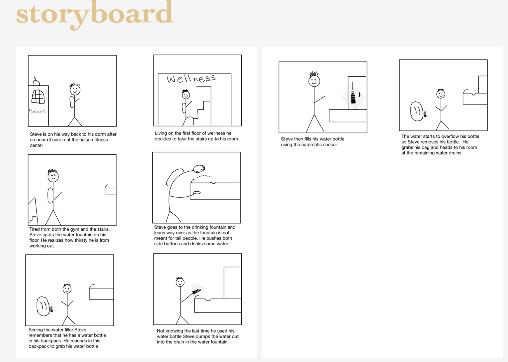
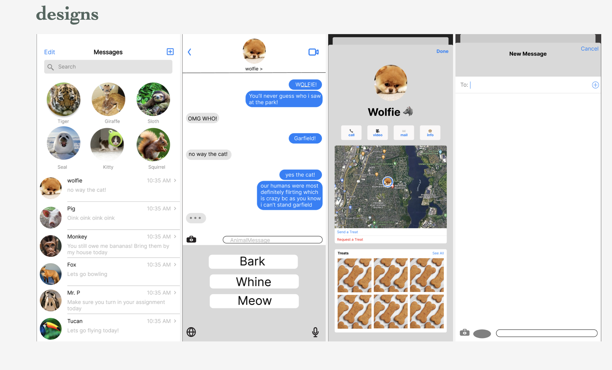
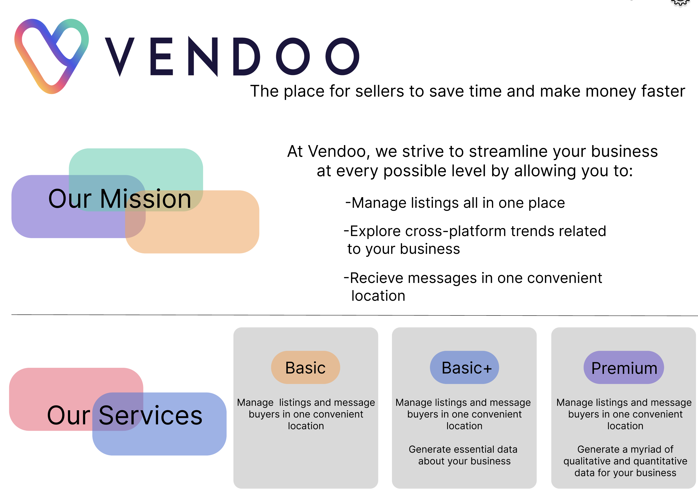

hi i'm ********
brown university student by day, asipring ui designer by night. follow along as i take you through my thought process and skills to finally create a website.
phase 1: thinking
personas
tldr:
the goal of this project was to explore how a user thinks and interacts with an interface. through interviews and observations i analyzed and created a storyboard of a mock user experience. this project helped me learn how to think like a user and create mental and conceptual models when designing.
project preview
click here to explore more about this project
phase 2: prototyping
hifi prototyping
tldr:
the goal of this project was to explore and learn about hifi prototyping. in a group we learned how to use Figma and created a mock up of an already known app, but for a difference purpose. this project is useful in the future for designing future mock up applications using Figma.
project preview
click here to explore more about this project
phase 3: design
iterative design
tldr:
this assignments builds on both personas and hifi prototyping. in a team we took a startup concept and created a mock up design of what their web application would look like. this took using mental models and conceptual models as well as the skills learned in figma to produce the final product.
project preview
click here to explore more about this project
phase 4: web development
better brown u app
tldr:
using my design skills i created a website with a group to help solve a problem at brown university. this problem was creating a single school calendar and detecting whether a place on campus is busy. using good ui design and assessing accesibility and safety we create the better brown u app.
website preview
click here to view the final website